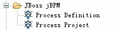
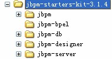

安装制作工具installanywhere
installanywhere 由zero g公司（http://www.zerog.com ）开发。zero g公司在多平台软件部署和维护领域是佼佼者。其代表产品有installanywhere和powerupdate。
InstallAnywhere 简化了软件配置于任何客户端及服务器平台的工作，自动处理完成所有的复杂环节。每次每一时间都可以按照你的要求精确地配置软件。
项目主页： http://www.zerog.com/
====================
打包J2EE工程为可执行文件（集成JVM、TOMCAT、MYSQL）
此示例的运行首先得确保自己自己的机子上没有MYSQL和TOMCAT5的服务。
工程以及其运行的环境整理后的目录层次结构，如下图所示：
-setup
- jakarta-tomcat-5.0.30
- Java
-jdk1.6.0_02
- MySQL Server 5.0
- web
-Test
上图是要被打包的J2EE工程以及其运行环境的目录层次结构，其中
jakarta-tomcat-5.0.30为TOMCAT的根目录，以下以%TOMCAT_HOME%来表示此目录。MySQL Server 5.0为MySQL的根目录。Web目录是用来存放J2EE工程的。Test是J2EE工程。
1、 TOMCAT和JVM的关联
步骤3中的B、C都是；
2、 TOMCAT的虚拟目录
在%TOMCAT_HOME% \conf目录中找到名为server.xml的批处理文件，找到<host>
元素，在此元素中追加一个子元素，内容为<Context path="/web" docBase="..\..\web\Test" reloadable="true" debug="0"/>，表示当TOMCAT启动的时候，会初始化上图中web目录中的J2EE工程Test工程。
当我们要访问Test工程的时候，只要在浏览器中输入http://localhost:8080/web即可。
3、 用INSTALLANYWHERE工具打包
用INSTALLANYWHERE直接把上图的setup文件夹进行打包，关于
INSTALLANYWHERE的使用方法，可以看“附录”文件夹下的“关于installanywhere的用法”文件夹中的技术文档，打包过程需要解决的问题：
A、 把MYSQL中的my.ini文件安装后自动追加以下内容：
[mysqld]
basedir=E:\ setup\MySQL Server 5.0
datadir=E:\ setup \MySQL Server 5.0\data\
default-character-set=UTF-8
set-variable=max_connections=1000
有了上述追加的内容后，MYSQL就可以注册为系统的服务了；
B、 在%TOMCAT_HOME%\bin目录中的startup.bat和shutdown.bat文件的开头追加以下内容：
set CURRENT_DIR= E:\ setup \apache-tomcat-5.5.25
C、 在%TOMCAT_HOME%\bin目录中的catalina.bat文件的开头追加以下内容：
set JAVA_HOME=F:\和\My_Product\Java\jdk1.6.0_02
set CURRENT_DIR=F:\和\My_Product\apache-tomcat-5.5.25\bin
D、 把MYSQL服务注册在系统中，可以在INSTALLANYWHERE中写一段批处理命令，在安装结束后，让MYSQL注册服务；
E、 制作一个批处理文件，安装进“开始--程序”中，做为用户启动工程的快捷方式，此批处理文件的功能为，启动MYSQL服务、启动TOMCAT服务或者JBOSS服务，停止MYSQL、停止TOMCAT和JBOSS服务；
解决上述问题之前，需要熟悉INSTALLANTWHERE，关于INSTALLANYWHERE的操作方法，在“附录”文件夹下的“关于installanywhere的用法”文件夹中已经有详细的说明。
解决A问题的方法：

http://p.blog.csdn.net/images/p_blog_csdn_net/canuonifeng/b.jpg
在“post-install”中添加一个叫“MODIFY TEXT FILE-SINGLE FILE”的ACTION；然后点击“CHOOSE TARGET”，选择my.ini文件；
选种prepend（在文件开头）单选框；
在additional Test中添加如下内容：
[mysqld]
basedir = $USER_INSTALL_DIR$/ MySQL Server 5.0
datadir = $USER_INSTALL_DIR$/ MySQL Server 5.0/data
default-character-set = utf8
完成上述步骤后就能在my.ini的文件的开头追加上述内容了；变量
$USER_INSTALL_DIR$是INSTALLANTWHERE的内置变量，此变量的值就是用户安装指定的目录；
注意目录中的反斜杠。如果用“\”则系统会把犹如“\t”的字符串进行转义；
解决B和C问题的方法：
在“post-install”中新建“MODIFY TEXT FILE-SINGLE FILE”的ACTION；
如同解决A问题；
解决D问题的方法：
在“post-install”中新建“Excute Script/Batch File”的ACTION；
在COMMET中填入“注册MYSQL服务”；
在代码填写框中输入：
Call “$USER_INSTALL_DIR$/ MySQL Server 5.0/bin/mysqld-nt” install
解决E问题的方法：
编写两个批处理文件，一个名为“启动服务.bat”,一个名为“停止服务.bat”,
启动服务.bat 的 内容如下：
Net start mysql
Call “$USER_INSTALL_DIR$/ jakarta-tomcat-5.0.30/bin/startup.bat”
停止服务.bat 的 内容如下：
Call “$USER_INSTALL_DIR$/ jakarta-tomcat-5.0.30/bin/shutdown.bat”
Net stop mysql
把两个文件安装在用户的“开始—程序”菜单中，如图：

http://p.blog.csdn.net/images/p_blog_csdn_net/canuonifeng/a.jpg
分别选中“启动服务.bat”和“停止服务.bat”文件，在名为path的下拉列表中选择“shortcuts’ Destination folder”
最后，构件可执行文件，OK！
==========================
使用InstallAnywhere7.1制作Java exe程序安装包
Java应用程序项目开发测试完成后,企业需要将此包存档(即jar文件),并制作成商业化安装程序。
1、在制作成jar文件之前，先写一个manifest文件(用户自建详情表单文件，后缀名是.mf)，在制作jar文件的过程中用于指出一个使用验证信息说明相关jar文件的文件(即当前项目使用到的第三方jar库文件)。
manifest文件：
Manifest-version:
Class-Path:
Main-Class:
2、使用jar打包class文件或目录。
3、制作好档案文件(jar文件)后，打开 InstallAnywhere7.1，新建一个project,进入Advanced Designer(对于比较简单的Java应用程序，可以用Project Wizard来制作)，下面的步骤都在Advanced Designer下进行。
4、Project：设置基本的安装程序信息。
5、Installer UI：定义安装程序的安装界面。
6、Organization：定义Java应用程序需要安装的组件。可以设置好典型的安装组件(Typical)，也可以让用户自定义组件。
7、Pre-Install：定义安装程序运行时的各个执行动作，是对在Install UI中定义的各Panel进行解释和执行。所以这里的Panel数量和顺序一定要和Install UI中定义的相一致。
8、Install：指定需要打包的文件，在Install这个模块中定义的路径就是安装程序执行完成后装在本地PC上的程序内部路径。通过Set Classpath和Add Launcher指定程序入口，还可添加快捷方式在程序组中。
9、Post-Install：定义程序安装完成后的工作，如添加动态配置，注册表更改及重启计算机等动作。对于更高级的使用还可以对各Action进行脚本编写。
10、Pre-Uninstall：类似Pre-Install，定义卸载前的动作，如选择要卸载的模块等。
11、Post-Unistall：类似Post-Install，添加卸载完成后的操作，如重启计算机，添加相关提示等。
12、Build：上述的各个模块都已经定义完成之后，可以选择不同的平台，VM版本，需不需要VM，以及跟踪日志等。最后，就可以用InstallAnywhere生成我们所需要的支持程序了。
注意：jvm是占很大空间的，整个解压出来就是一个完整的jre，差不多要50-70M。但是可以选择，你可以不将jvm包含进去，但是前提是运行你的程序的机器上必须已经安装了符合条件的jre或jdk。
下面提供一个InstallAnyWhere 7.1的注册码：MQ72223DFM
文章整理的有点简单，我这里只是直到简单说明的作用，关键还是大家在用的过程中学习掌握它。